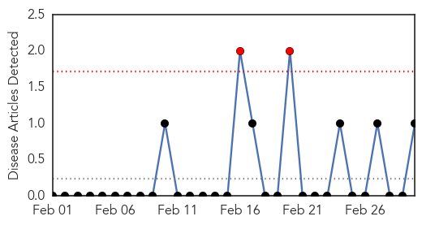
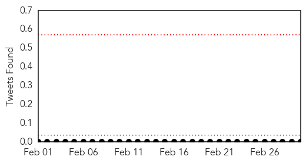
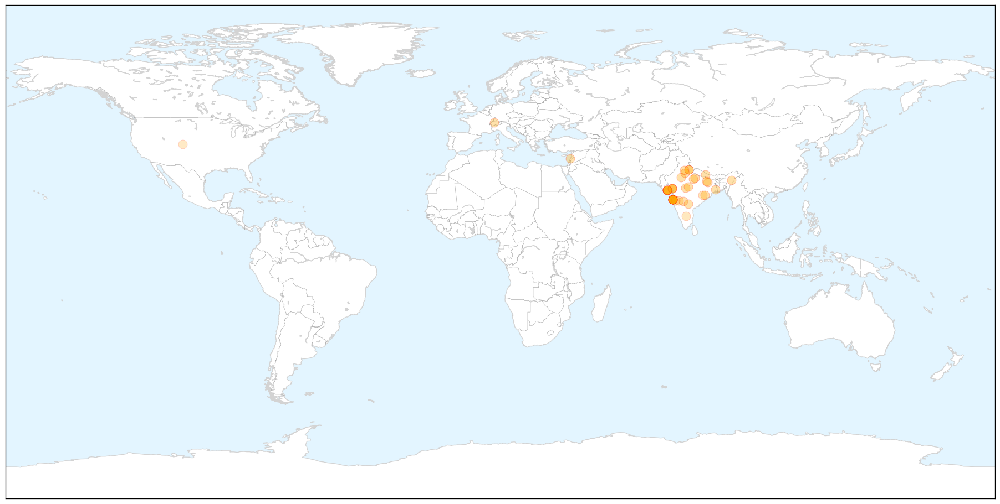
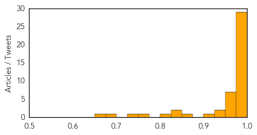

West Nile Virus
30-Day Web Trend
2 alerts, 0 warnings

30-Day Twitter Trend
0 alerts, 0 warnings

Article Locations
Article Confidences

Top Articles:
Top Tweets:
-
No tweets found for Mar 02, 2015
Swine Flu
30-Day Web Trend
16 alerts, 9 warnings

30-Day Twitter Trend
2 alerts, 0 warnings

Article Locations

X

Article Confidences
Top Articles:
- 1.000
- Swine flu in Mumbai: Maha govt will bear swine flu treatment cost
- 1.000
- 40 more dead as swine..., SahilOnline News
- 1.000
- Swine flu claims 34 more lives, toll mounts to 1,075
- 1.000
- Rain, fall in temp may lead to rise in swine flu cases
- 1.000
- Swine flu death toll climbs to 1075, almost 20,000 cases nationwide
- 1.000
- Swine flu death rings alarm bell
- 0.999
- Swine flu could spread to Pakistan: Ansar Burney
- 0.999
- Health Minister appeals all to collectively fight Swine flu; asks not to travel to outbreak areas
- 0.998
- Swine flu in West Bengal: 16 new cases in 24 hrs, total affected 131
- 0.998
- Swine flu spreads in UP, number of cases likely to go up due to rain
- 0.997
- Weather damper on battle against flu
- 0.997
- Treat all swine flu patients free of cost: Maharashtra CM Fadnavis
- 0.997
- Rain to flare up swine flu terror
- 0.995
- Swine flu in Nagaland: State to collectively fight, instead of provide wrong information
- 0.995
- Swine flu in India: Nationwide spurt in cases, death toll crosses 1000
- 0.995
- H1N1 Swine flu: 6 more die in Rajasthan; Government says no negligence
- 0.994
- Swiss strain of flu virus not so scary, doctors say
- 0.994
- Sonam Kapoor tests Positive for Swine flu, Admitted to Hospital in Mumbai
- 0.992
- Swine flu spreads further in Uttar Pradesh
- 0.992
- Sudden drop in temperature raises viral infection scare
- 0.991
- 3 Suspected Swine Flu Cases Detected in Tyre — Naharnet
- 0.989
- Fall in temperature can lead to rise in swine flu cases
- 0.988
- Jharkhand requires more VTM kits to be fully prepared
- 0.984
- Swine flu strikes Ranchi woman
- 0.979
- School Students Worried as Swine Flu Cases Surge in Gujarat
- 0.978
- Sonam Kapoor tests positive for swine flu - Sonam Kapoor- Swine Flu- Dolly Ki Doli- Prem Ratan Dhan Payo
- 0.977
- Maharashtra govt to bear swine flu treatment cost
- 0.977
- Swine flu-hit member wants drive to educate people on disease
- 0.975
- Swine flu claims 8 more lives in Gujarat; toll reaches 283
- 0.974
- Swine flu-hit Sonam Kapoor admitted to Kokilaben hospital
- 0.971
- Maharashtra picks up private hospital tab to treat swine flu
- 0.970
- Over 1,100 dead due to swine flu
- 0.968
- Over 1,100 dead due to swine flu
- 0.960
- Swine flu toll in Maharashtra rises to 152
- 0.959
- 'Individuals, state to collectively fight against swine flu'
- 0.955
- Maharashtra swine flu toll reaches 152
- 0.937
- Swine flu: Maharashtra govt says next 15 days are critical, extends help to hospitals
- 0.928
- Dallasblog.com, the Dallas, Texas news blog and Dallas, Texas information source for the DFW Metroplex.
- 0.924
- Here's How Salman Khan is Protecting Himself from Swine Flu
- 0.864
- Sonam Kapoor recovering well, swine flu under control
- 0.847
- Sonam Kapoor admitted in Mumbai hospital
- 0.835
- Sonam Kapoor recovering well after contracting swine flu
- 0.817
- Sonam Kapoor in Mumbai for swine flu treatment, condition stable
- 0.751
- H1N1 Patient Dies After ICU Power Cut, Claims Family
- 0.726
- Sonam Kapoor recovering well, swine flu under control
- 0.688
- Sonam Kapoor showing signs of speedy recovery from swine flu : Celebrities, News
- 0.669
- Pediatricians Under Pressure From Parents To Spread Out Vaccine Schedule
Top Tweets:
-
No tweets found for Mar 02, 2015